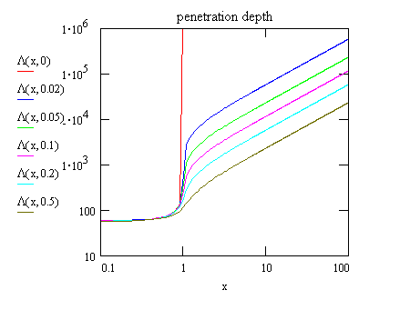

The complete theory of reflection and refraction of an
electromagnetic
wave at an interface is given by the Fresnel formulae (around 1830). It
took 30 years after the discovery of x-rays, until first Kiessig in the
1930's
and later Abeles and Parratt in the 1950's applied the Fresnel theory
to x-rays, and
thus created a tool to study the structure at interfaces on a scale
ranging
from 10 Å to several 1000 Å: X-ray Reflectivity.
E|| exp(i kz rz) + r E|| exp(-i kz rz) = t E|| exp(i kz' rz)The reflection factor r and the transmission factor t are complex, i.e. carry information about both the phase and the magnitude of the reflected and the transmitted (or refracted) wave as compared to the incident wave. Choosing the interface boundary at rz=0, this condition simplifies to
1 + r = tA second boundary condition is obtained for the parallel component of the magnetic field H. The magnetic field is related to E via the Maxwell equation
-∂/∂t (μ μ0 H) = ∇ × Eyielding for a plane electromagnetic wave:
ω μ μ0 H = k ⨯ EThe second boundary condition can thus be rewritten in terms of the electric field
(k ⨯ E)|| /μ = (k' ⨯ E')||/μ'and reads for the case of E parallel to the interface, and considering that the z-components of the wave vectors for the reflected and transmitted waves are given by -kz and k'z, respectively :
( kz - r kz ) / μ = t k'z / μ'With m = μ' = 1 for non-magnetic materials, we obtain the Fresnel formulae
r = (kz - kz') / (kz + kz')The reflected and transmitted intensities are proportional to || E ||2 and thus
t = 2 kz / (kz + kz')
RF = | r |2
TF = Re(k'z/kz) | t |2
RF and | t |2 are plotted below. Above the critical angle RF falls off like kz-4 which can be seen by expanding kz' and r :
n2-1 ≈ -2δ = -αc2for kz > kzc = k αc where kzc is the z-component of k at the critical angle.
kz'/kz = sqrt( (n2-1) k2/kz2 + 1) ≈ sqrt (- αc2 k2/kz2 + 1) ≈ 1 - kzc2/ 2 kz2
r = (1-kz'/kz) / (1+kz'/kz) ≈ kzc2 / 4 kz2
Finally we introduce the scattering vector q as q = kf - ki., where ki and kf are the wave vectors of the incident and scattered wave, respectively. In specular reflectivity only the z-component of q is non-vanishing and is easily obtained from k=ki
qz = 2 kzBy substituting kz by qz we derive the famous q-4 law:
RF = kzc4 / qz4
A frequently used way of presenting reflectivity data is relative units. If we introduce
x = kz/kz,c = a/αc = q/qcwhere the index c denotes the respective quantity taken at the critical angle, the Fresnel reflectivity can be written as
y = β/ δ
x' = ( x2-1+i y )0.5
R = |r|2 = | (x-x') / (x+x') |2In the following R and T are shown for different values of y = β/δ.
T = |t|2 = | 2 / (x+x') |2
|
|
|
The effect of β is that the sharp
singularites
at the critical angle are smoothed out. If β
were larger than 0.5 δ, there would hardly
be
a clear-cut critical angle any more. However, such exotic conditions
can
be only met right at an absorption edge
(for example calcium at 4039 eV).
| t |2 describes the strength of the refracted wave
immediately
at the interface. At the critical angle, incident and reflected wave
are
in phase, so that the field amplitude is doubled. Close to α=0
the fields are out of phase, i.e. cancel each other, so that and the
amplitude
of the transmitted wave goes to 0.
Other quantities important for the experiment that can be easily
extracted
from our calculation above are the penetration depth L
and
the scattering depth Λs.
We will give here a more complete treatment than needed for the
specular reflectivity alone, as the arguments also apply for any other
kind of grazing incidence scattering technique.
Λ is related to the damping of the incident wave perpendicular to the interface which is given by the imaginary part of the z-component of the transmitted wave vector
Λ = 2π / Im(kz')Similarly, there is an escape depth associated with a photon transmited at a finite depth below the sample surface:
1 / Λs = 1 / Λ + 1 /ΛescapeIn the case of specular reflectivity the exit wave vector kf,z' is simply -kz' and qz' = 2 kz' and hence
Λs = 2π / Im(qz') = Λ / 2The figure shows the penetration depth as function of x = α/αc for different values of β/δ. Above the critical angle (x>1) the penetration depth is controlled mainly by x-ray absorption, while below the critical angle refraction dominates. Note that the limiting value for the penetration depth at zero incidence is about 50Å, independent of element.

In our derivation we used k to characterize the incident wave. In an experiment we would usually measure the angle of incidence α:
kz = k sin α ~ k α (rad)The scattering vector q is given by
q = 2 k sin α = 2 kzWith 2 k = 4π/λ = 12.566/λ and E = hν = hc /λ = 12.4 keV Å / λ we can use the accidental similarity of the numerical values of 4π and hc (keV Å) to write
q (Å-1) = E (keV) sin a ~ E (keV) α (mrad)which is very convenient for some first numerical estimates during an experiment.